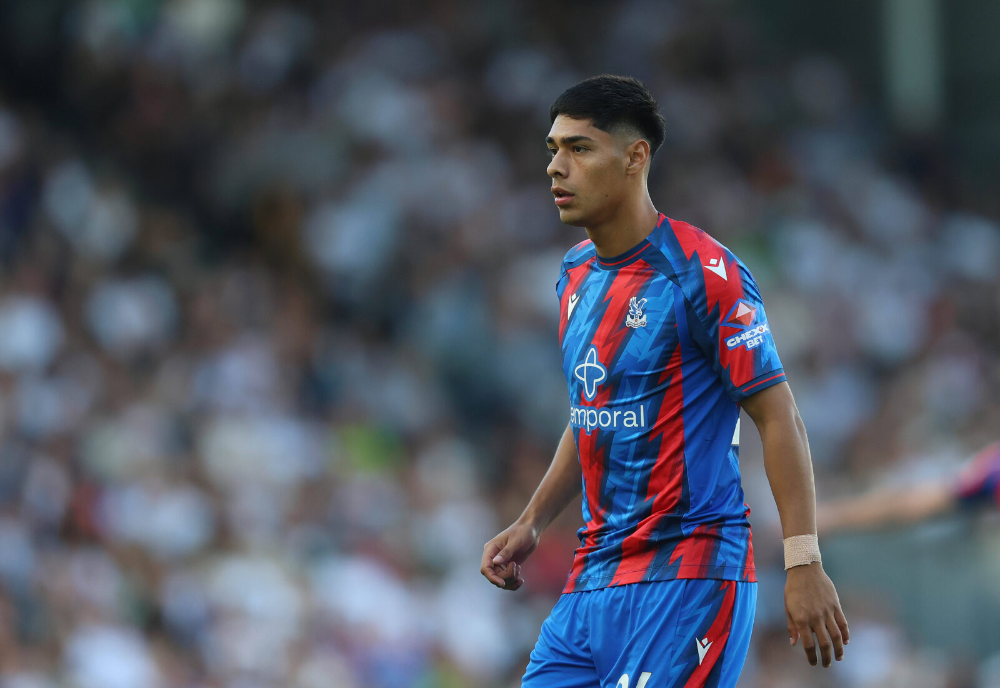
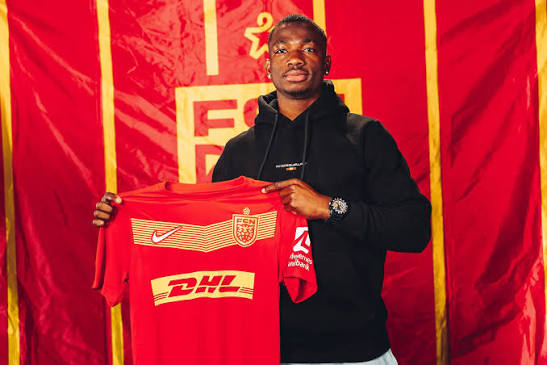
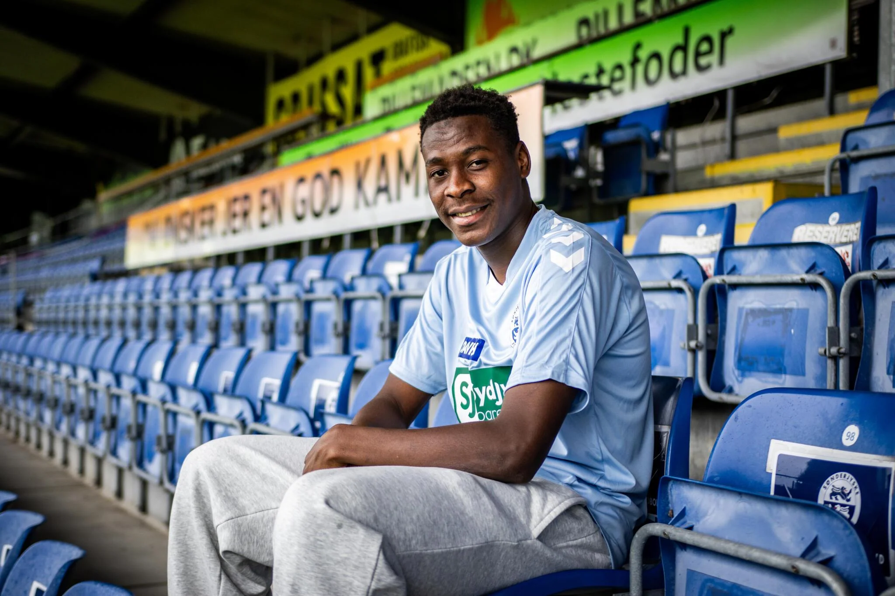
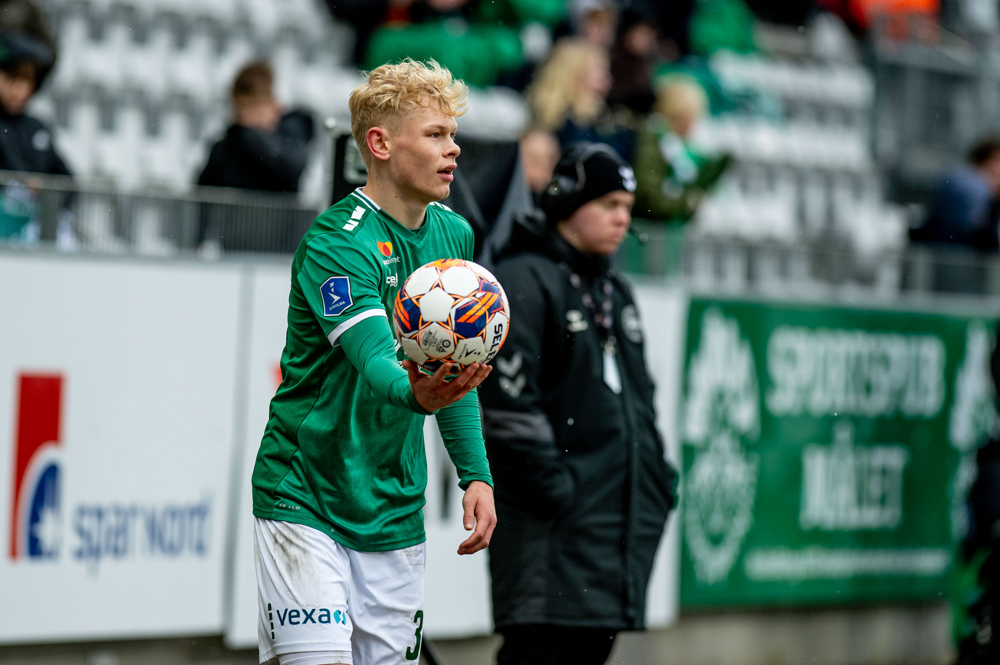
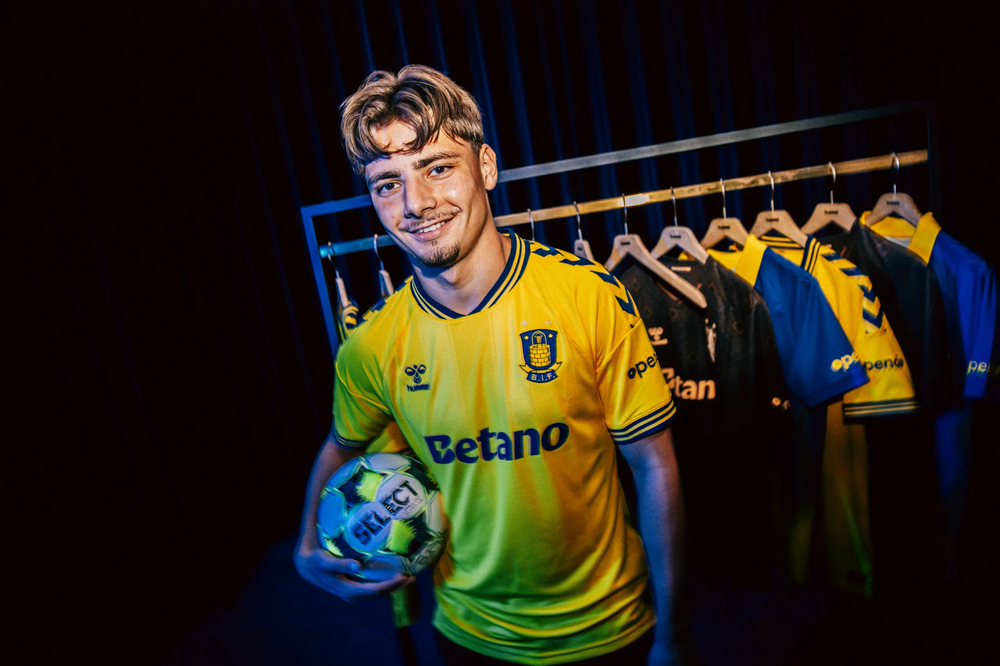
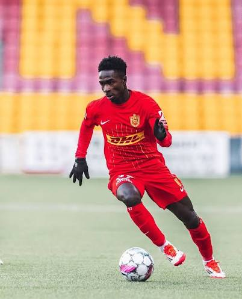
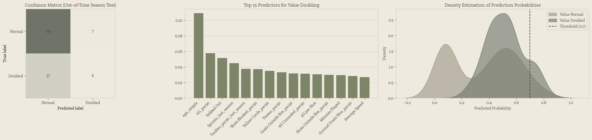

The model used 25/26 season performance data and data from past seasons to predict the if the player's value will double for the 27/28 season.
The Predictions
26/27 breakout prediction accuracy
| Player | Prediction Accuracy |
|---|---|
| D. Osorio | 83.6% |
| L. Nene | 80.0% |
| M. Cherif | 76.2% |
| J. Vester | 72.8% |
| O. Hyseni | 72.7% |
| P. Junior | 72.4% |
Read this list as a ranking of upside, not certainty — an accuracy of 70% still means roughly three in ten similar players don't pan out. The value is in surfacing names worth watching sooner rather than later.
Player Spotlights
How each breakout candidate's season is going

D. Osorio 83.6%
When Crystal Palace paid FC Midtjylland €32 million for Dario Osorio this year, it wasn't just a big fee — it became the most expensive transfer out of Scandinavia in football history. That number alone says everything about how the 25/26 season went for the Chilean international: a leap from promising young striker to a certified statement sale, and the headline case for why the model weighs market outcomes so heavily.

L. Nene 80.0%
Nene's season has been a quieter one by comparison. Still tied to FC Nordsjælland, the Ivorian forward has spent this campaign on loan at Swiss side Lausanne-Sport, where he's mostly played a substitute role — he wasn't even involved when Lausanne faced St. Gallen in the Conference League playoff. But the numbers underneath tell a better story: five league goals last season from largely bench minutes, enough that Lausanne have already built in an option to make the move permanent.

M. Cherif 76.2%
Cherif's route to the Superliga reads like the sport's favourite kind of scouting story. Guinean-born, he started out at a small academy in Conakry, tried his luck in Turkey with Ankaragücü's youth side, and only found a real foothold in Denmark's third tier with Ishøj — before Sønderjyske came calling in 2024. Two contract extensions later (the latest through 2031, complete with a new shirt number), the 20-year-old has gone from trial player to first-team fixture, and picked up his first senior Guinea call-up along the way.

J. Vester 72.8%
Vester's season ended with Viborg cashing in — a record sale to Norwegian club Sandefjord worth roughly half a million euros (about four million kroner) plus bonuses, with a resale clause attached that could make the deal worth considerably more down the line. For a 21-year-old midfielder, that's the kind of number clubs notice.

O. Hyseni 72.7%
Few breakout stories this season carry as much weight as Hyseni's. Born in Denmark to parents who fled Kosovo as refugees, he became Sønderjyske's youngest-ever Superliga goalscorer as a teenager, then extended his contract to 2029 off the back of a hot start to 25/26 — only for Brøndby to make it a moot point anyway. Their record €2.65 million move (rising to €3.2 million) reunited him with the coach who developed him, and he marked his Brøndby debut with the winning goal against Viborg.

P. Junior 72.4%
Junior's first full season has been the kind scouts dream about. Straight out of Ghana's Right to Dream academy — the same pipeline that produced Mohammed Kudus — he scored and assisted on his Superliga debut, then finished his rookie campaign as Nordsjælland's top scorer with nine goals as the club finished third. A senior Ghana call-up followed in May, and reported interest from Manchester United, Juventus, PSG and Newcastle means this is unlikely to be the last we hear of him.
Under the Hood
The technicals
For readers who want the details: the model is a deliberately small, lightly regularised XGBoost classifier, trained on historical Superliga performance data to separate players likely to break out ("Value Doubled") from those on a normal development curve ("Value Normal").
What counts as a "breakout" here
Our requirement for a player is that their market value doubles in the following seasons — so the model excludes anyone whose value doesn't double. But it also excludes a lot of players whose value did double the very next season, and that second part is deliberate, not a flaw.
If a player's value doubles immediately, the whole market has already noticed — there's no window left to act on it. What we actually want are players whose value spikes with a delay: good enough right now to double eventually, but not yet obvious enough for the price to have moved. That gap is the buying window. So the model isn't tuned to catch all 43 players who doubled in the test set — it's tuned to find the ones still flying under the radar.

Reading the three panels
Confusion matrix. On the out-of-time test set, the model correctly clears 144 of 151 "Normal" players and flags 6 of 43 true breakouts. The 37 it misses aren't all failures — many are exactly the "doubled too fast to act on" cases described above.
Top predictors. Age comes out on top, ahead of per-90 xG, being subbed out, and last season's sprint counts. Underlying quality and physical output drive the signal far more than raw counting stats like goals or minutes.
Probability density. "Normal" and "Doubled" players cluster in genuinely different probability ranges. The 0.7 threshold sits where the two curves overlap least, so the model only flags players it's very confident about — on purpose, a small, high-conviction shortlist rather than a long, noisy one.